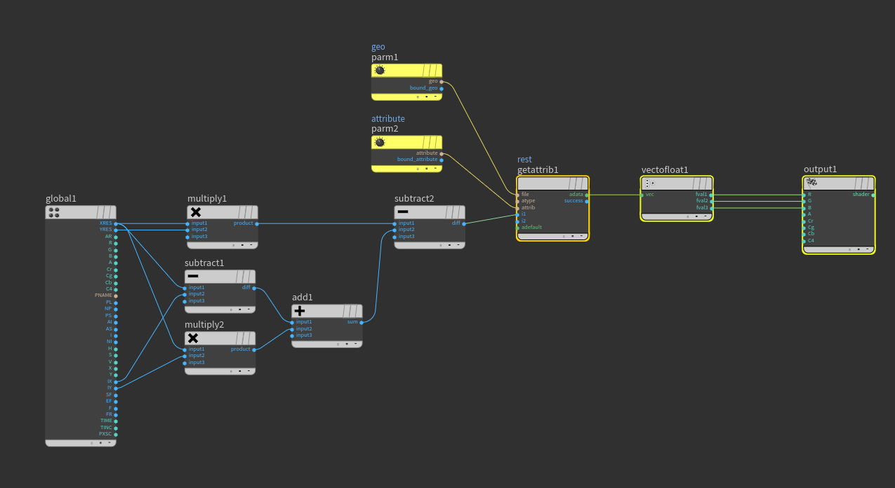
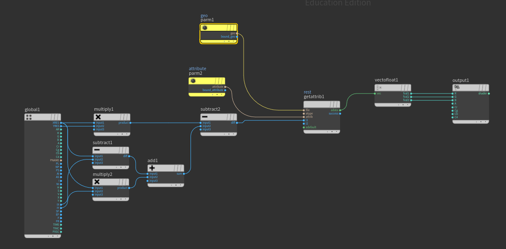
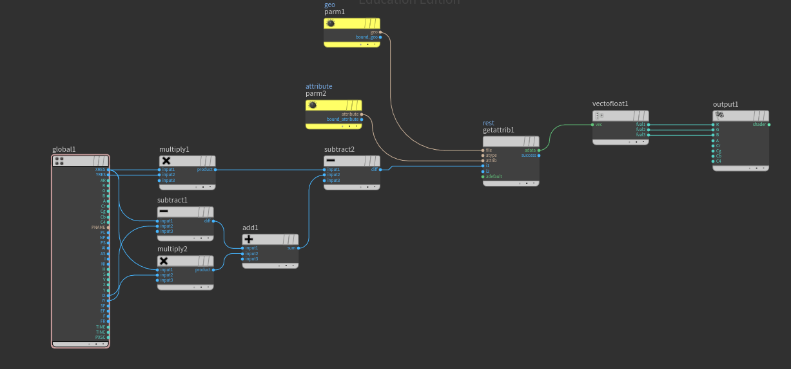

← 部落格 × Special Project | PART2


第 3 周
第 3 周计划：
-
把大量粒子从 Houdini 汇入 Unreal
Houdini Niagara 测试
我也试著透过 Houdini Niagara 把 Gaussian Splat 粒子汇入 Unreal。马克杯的粒子数不多，所以能汇入 Unreal 并重建得很好。第一支影片是在 Unreal 中算出的马克杯。后来我发现用 Houdini Niagara 外挂汇入大量粒子非常耗时。
所以我照著一个教学，用一个能像 VAT 一样烘焙动画的自订工具汇入大量粒子。教学连结：https://www.youtube.com/watch?v=Yf4IBYPALdo
基本上是 Itim 把她的 Houdini 档传给我，由我来测试。照著教学，我先从写 VEX 开始。
这是在 Houdini Point Wrangle（Run Over 设为 Points）中执行的 VEX 程式。目的是把点云重新排列成规则的 2D 网格，让点的资料能烘焙进贴图。这是 GPU 粒子、VAT（顶点动画贴图）或点快取的标准技术，之后可在游戏引擎或 shader 中读回。
接著在 COPs 中产生位置、颜色、pscale 和速度贴图。
下面展示如何把位置资料写进贴图。

这一步把每个点的 3D 位置编码成一个像素的颜色。处理完所有像素后，就得到一张「位置贴图」：每个像素的 RGB 存放对应点的 XYZ 座标。游戏引擎或 shader 可以取样这张图，在 GPU 上瞬间重建整个点云的位置。其他属性也能用同样方式撷取。


Cd（颜色）
Pscale（大小）
Velocity（速度）
这是最终结果的样子。因为粒子数量一直在变，每个粒子的 ID 也跟著变，所以把动画烘焙成贴图后会闪烁。我也和 Danci 讨论过能否在 Unreal 中迭代，Danci 说很困难，所以我们放弃了这个流程。